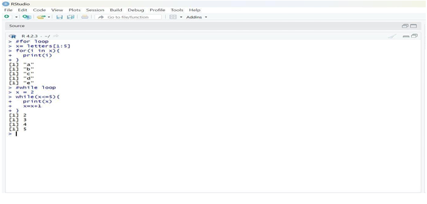

To implement the looping statements in R.
o Define a Looping Structure – Choose a loop type (for or while) based on the requirement.
o Set Loop Conditions – Specify the range or condition for iteration.
o Execute the Loop – Run the loop to iterate over elements or increment values until the condition
is met.
oVerify Output – Print and observe the loop execution to confirm correct iteration.
#for loop
x=letters[1:5]
for(i in x){
print(i)
}
#while loop
x = 2 while(x<=5)
{
print(x)
x=x+1
}
